Selected Publications Complete List
2026
8 papers
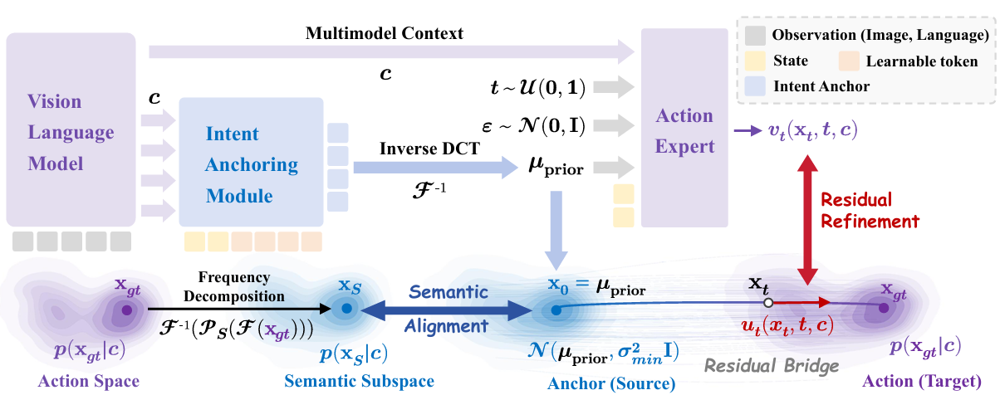
From Noise to Intent: Anchoring Generative VLA Policies with Residual Bridges
Yiming Zhong, Yaoyu He, Zemin Yang, Pengfei Tian, Yifan Huang, Qingqiu Huang, Xinge Zhu, Yuexin Ma*.
ICML 2026
[Paper] [Home Page]
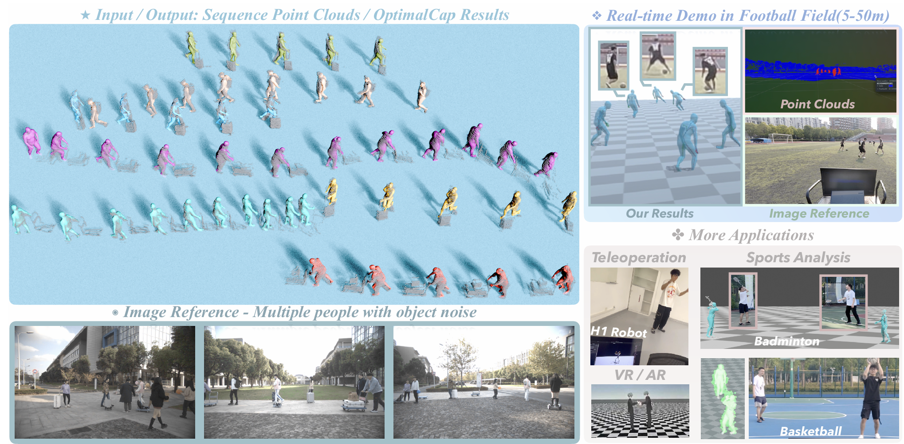
OptimalCap: Efficient and Robust LiDAR-Based Motion Capture in Free Environments
Yiming Ren, Yujing Sun, Xiao Han, Yichen Yao, Xiaoxiao Long, Xinge Zhu, Siu Ming Yiu, Yuexin Ma*.
TPAMI 2026
[Home Page]
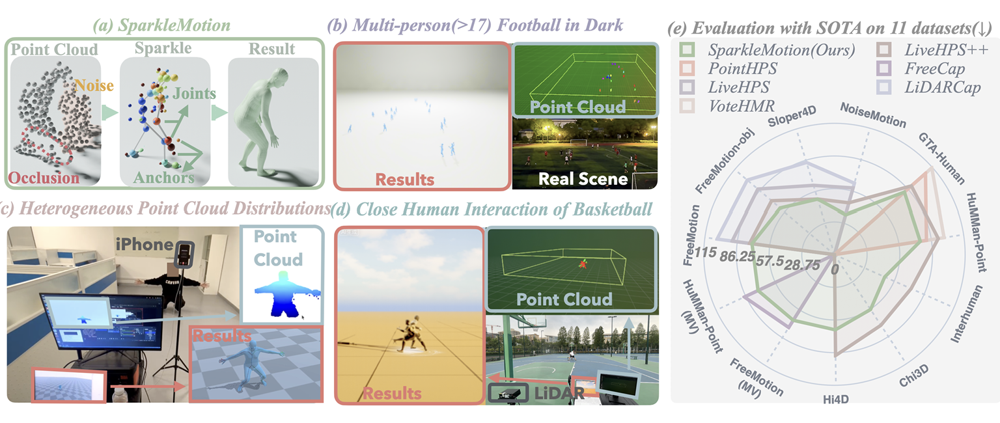
Sparkle: A Robust and Versatile Representation for Point Cloud-based Human Motion Capture
Yiming Ren, Yujing Sun, Aoru Xue, Kwok-Yan Lam, Yuexin Ma*.
ICLR 2026
[Home Page]
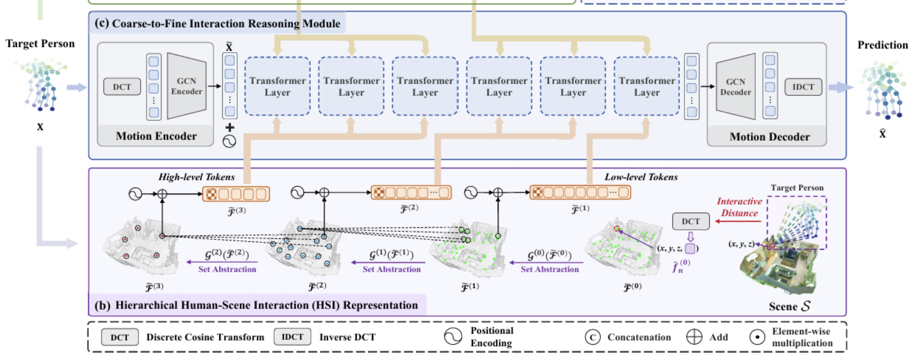
HUMOF: Human Motion Forecasting in Interactive Social Scenes
Caiyi Sun, Yujing Sun, Xiao Han, Zemin Yang, Jiawei Liu, Xinge Zhu, Siu Ming Yiu, Yuexin Ma*.
ICLR 2026
[Paper] [Home Page]
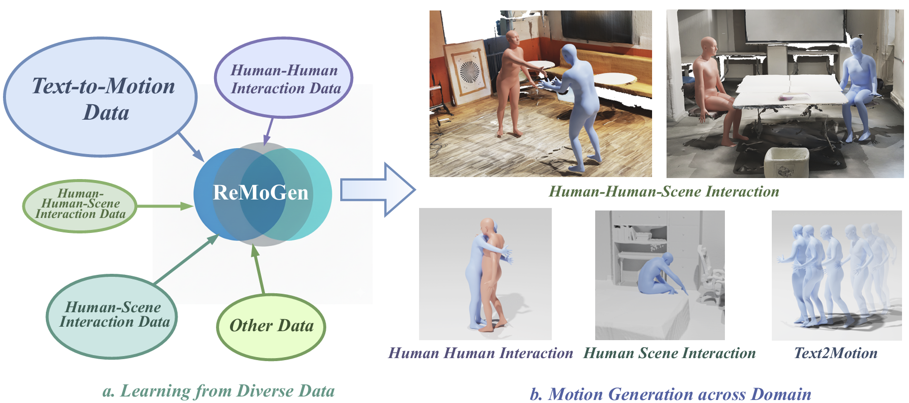
ReMoGen: Real-time Human Interaction-to-Reaction Generation via Modular Learning from Diverse Data
Yaoqin Ye, Yiteng Xu, Qin Sun, Xinge Zhu, Yujing Sun, Yuexin Ma*.
CVPR 2026
[Home Page]
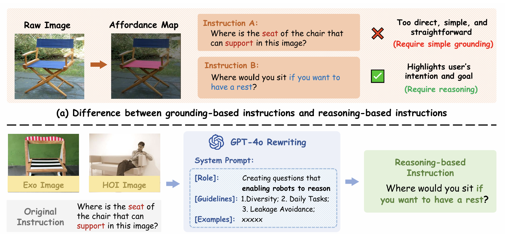
Affordance-R1: Reinforcement Learning for Generalizable Affordance Reasoning in Multimodal Large Language Models
Hanqing Wang, Shaoyang Wang, Yiming Zhong, Zemin Yang, Jiamin Wang, Zhiqing Cui, Jiahao Yuan, Yifan Han, Mingyu Liu, Yuexin Ma*.
AAAI 2026 Oral
[Paper] [Home Page]
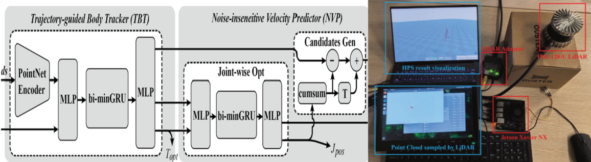
LiveHPS-Lite: A Lightweight LiDAR-based Motion Capture System for Edge Applications
Yiren Zhu, Junsheng Zhou, Yiming Ren, Hanshu Hezi, Yuexin Ma* and Xin Lou*.
ASP-DAC 2026
[Paper] [Home Page]
2025
15 papers

FreqPolicy: Frequency Autoregressive Visuomotor Policy with Continuous Tokens
Yiming Zhong, Yumeng Liu, Chuyang Xiao, Zemin Yang, Youzhuo Wang, Yufei Zhu, Ye Shi, Yujing Sun, Xinge Zhu, Yuexin Ma*.
NeurIPS 2025
[Paper] [Home Page]
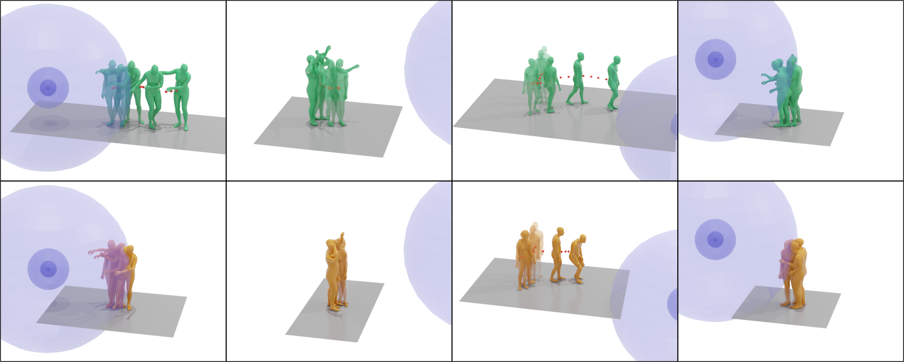
MOSPA: Spatial Audio-Driven Human Motion Generation
Shuyang Xu*, Zhiyang Dou*, Mingyi Shi, Liang Pan, Leo Ho, Jingbo Wang, Yuan Liu, Cheng Lin, Yuexin Ma, Wenping Wang, Taku Komura.
NeurIPS 2025 Spotlight
[Paper] [Home Page]
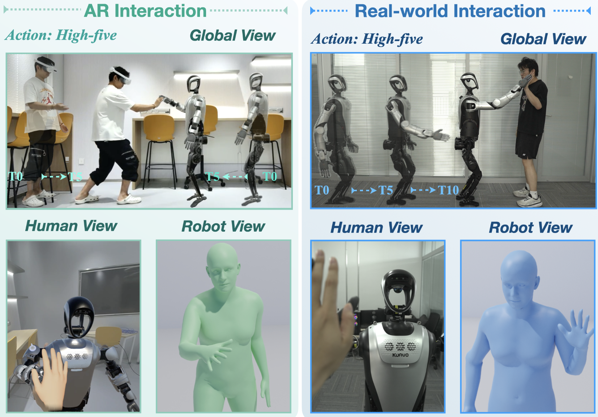
SymBridge: A Human-in-the-Loop Cyber-Physical Interactive System for Adaptive Human-Robot Symbiosis
Haoran Chen, Yiteng Xu, Yiming Ren, Yaoqin Ye, Xinran Li, Ning Ding, Yuxuan Wu, Yaoze Liu, Peishan Cong, Ziyi Wang, Bushi Liu, Yuhan Chen, Zhiyang Dou, Xiaokun Leng, Manyi Li*, Yuexin Ma*, Changhe Tu.
SIGGRAPH Asia 2025
[Paper] [Home Page]
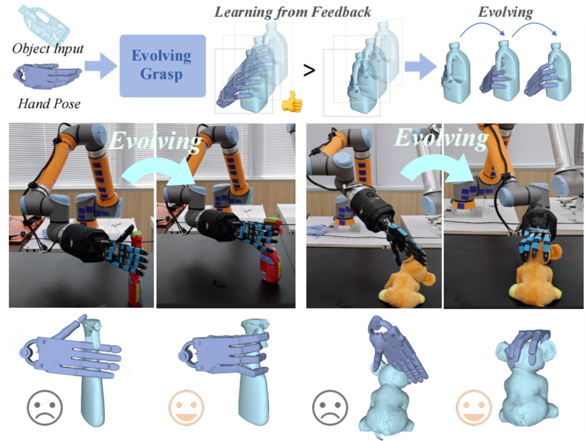
EvolvingGrasp: Evolutionary Grasp Generation via Efficient Preference Alignment
Yufei Zhu, Yiming Zhong, Zemin Yang, Peishan Cong, Jingyi Yu, Xinge Zhu, Yuexin Ma*.
ICCV 2025
[Paper] [Home Page]
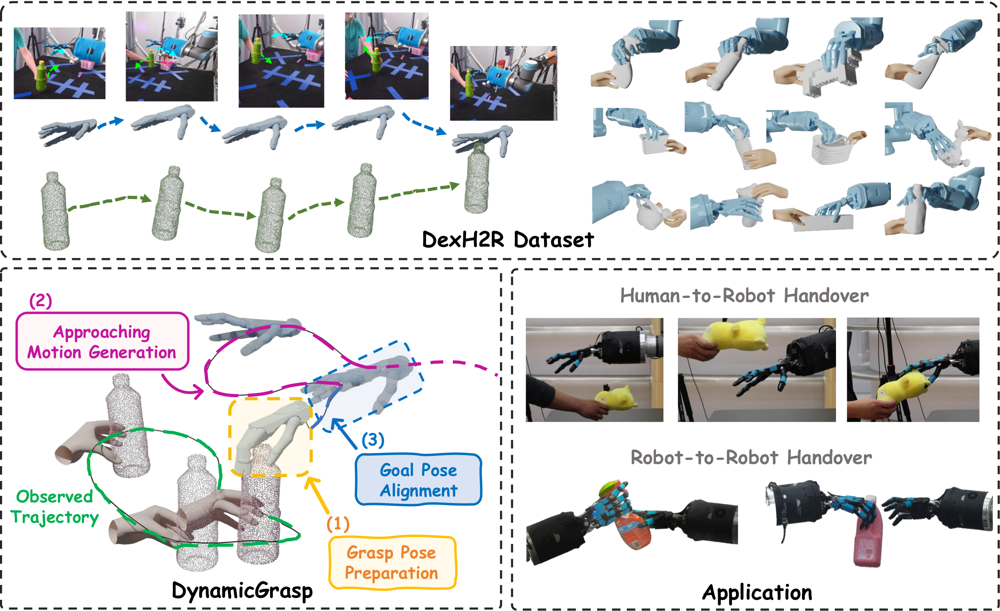
DexH2R: A Benchmark for Dynamic Dexterous Grasping in Human-to-Robot Handover
Youzhuo Wang, Jiayi Ye, Chuyang Xiao, Yiming Zhong, Heng Tao, Hang Yu, Yumeng Liu, Jingyi Yu, Yuexin Ma*.
ICCV 2025
[Paper] [Home Page]
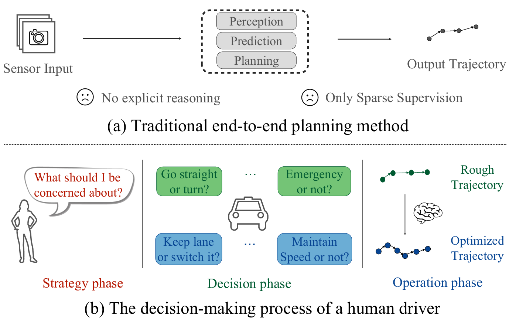
ReAL-AD: Towards Human-Like Reasoning in End-to-End Autonomous Driving
Yuhang Lu, Jiadong Tu, Yuexin Ma*, Xinge Zhu*.
ICCV 2025
[Home Page]
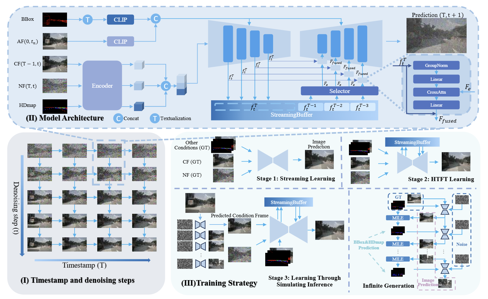
STAGE: A Stream-Centric Generative World Model for Long-Horizon Driving-Scene Simulation
Jiamin Wang, Yichen Yao, Xiang Feng, Hang Wu, Yaming Wang, Qingqiu Huang, Yuexin Ma*, Xinge Zhu*.
IROS 2025 Oral
[Paper] [Home Page]
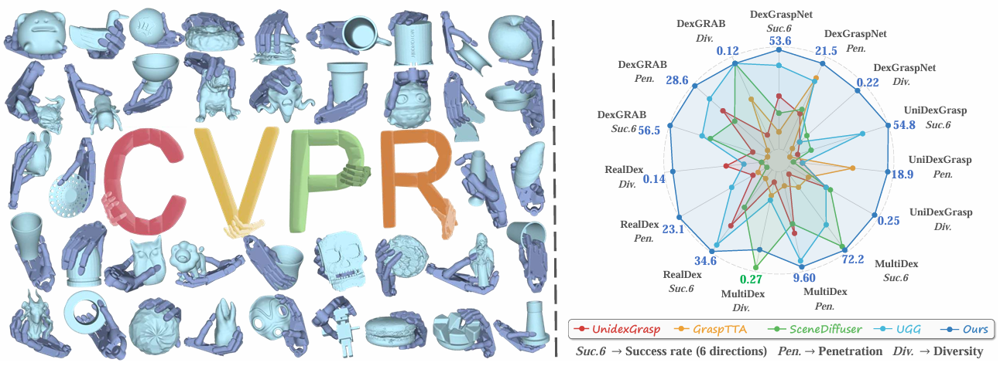
DexGrasp Anything: Towards Universal Robotic Dexterous Grasping with Physics Awareness
Yiming Zhong, Qi Jiang, Jingyi Yu, Yuexin Ma*.
CVPR 2025 Highlight
[Paper] [Home Page]
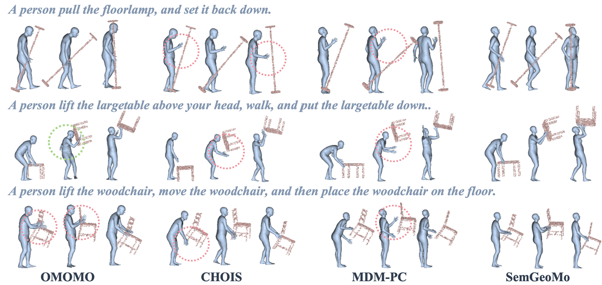
SemGeoMo: Dynamic Contextual Human Motion Generation with Semantic and Geometric Guidance
Peishan Cong, Ziyi Wang, Yuexin Ma*, Xiangyu Yue*.
CVPR 2025
[Paper] [Home Page]
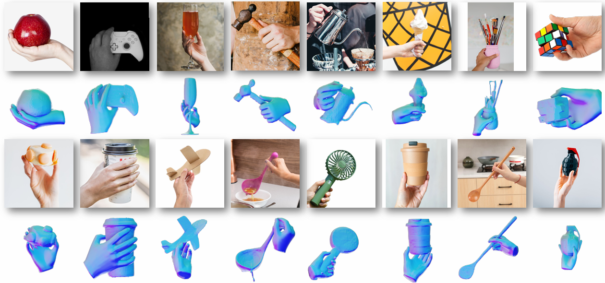
EasyHOI: Unleashing the Power of Large Models for Reconstructing Hand-Object Interactions in the Wild
Yumeng Liu, Xiaoxiao Long*, Zemin Yang, Yuan Liu, Marc Habermann, Christian Theobalt, Yuexin Ma*, Wenping Wang.
CVPR 2025
[Paper] [Home Page]
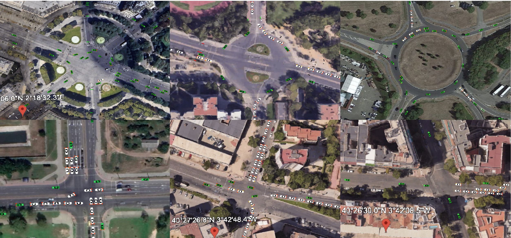
Optimizing Efficiency of Mixed Traffic through Reinforcement Learning: A Topology-Independent Approach and Benchmark
Chuyang Xiao, Dawei Wang, Xinzheng Tang, Jia Pan, Yuexin Ma*.
ICRA 2025
[Home Page]
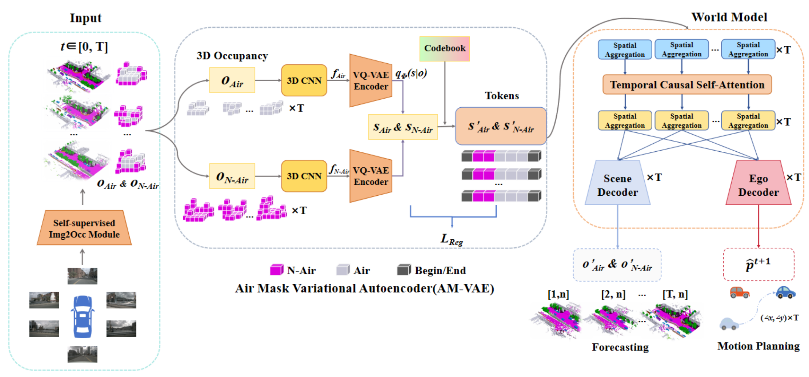
RenderWorld: World Model with Self-Supervised 3D Label
Ziyang Yan, Wenzhen Dong, Yihua Shao, Yuhang Lu, Haiyang Liu, Jingwen Liu, Haozhe Wang, Zhe Wang, Yan Wang*, Fabio Remondino, Yuexin Ma*.
ICRA 2025
[Paper] [Home Page]
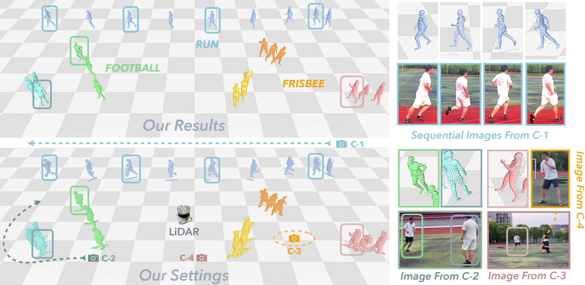
FreeCap: Hybrid Calibration-Free Motion Capture in Open Environments
Aoru Xue, Yiming Ren, Zining Song, Mao Ye, Xinge Zhu, Yuexin Ma*.
AAAI 2025
[Paper] [Home Page]
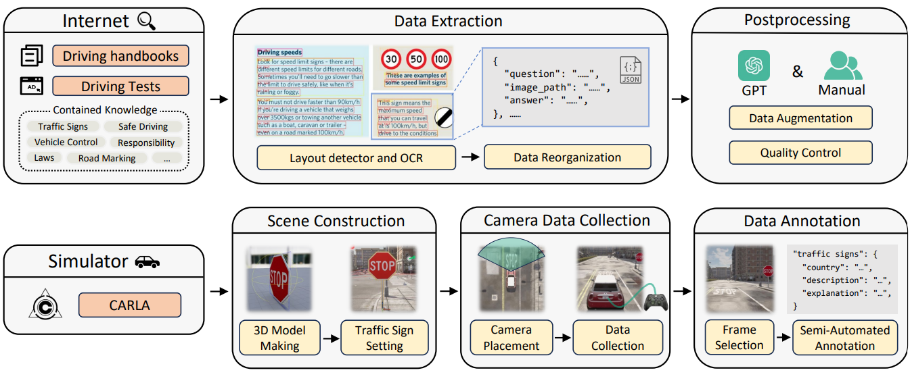
Can LVLMs Obtain a Driver's License? A Benchmark Towards Reliable AGI for Autonomous Driving
Yuhang Lu, Yichen Yao, Jiadong Tu, Jiangnan Shao, Yuexin Ma*, Xinge Zhu*.
AAAI 2025
[Paper] [Home Page]
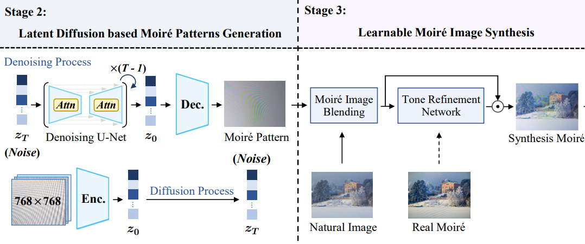
UniDemoire: Towards Universal Image Demoiring with Data Generation and Synthesis
Zemin Yang, Yujing Sun, Xidong Peng, Siu Ming Yiu, Yuexin Ma*.
AAAI 2025
[Home Page] [Paper]
2024
15 papers
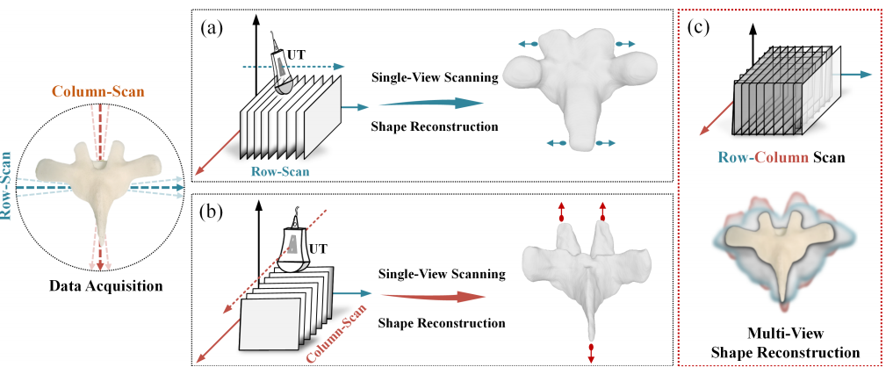
RoCoSDF: Row-Column Scanned Neural Signed Distance Fields for Freehand 3D Ultrasound Imaging Shape Reconstruction
Hongbo Chen, Yuchong Gao, Shuhang Zhang, Jiangjie Wu, Yuexin Ma, Rui Zheng*.
MICCAI 2024 Best Paper Award
[Paper] [Home Page]
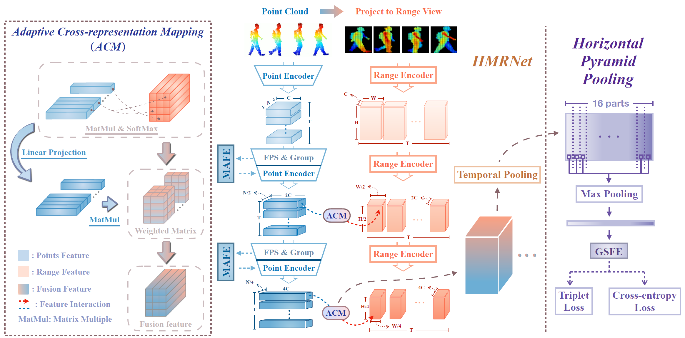
Gait Recognition in Large-scale Free Environment via Single LiDAR
Xiao Han, Yiming Ren, Peishan Cong, Yujing Sun, Jingya Wang, Lan Xu, Yuexin Ma*.
MM 2024 Oral, Best Paper Nomination
[Home Page]
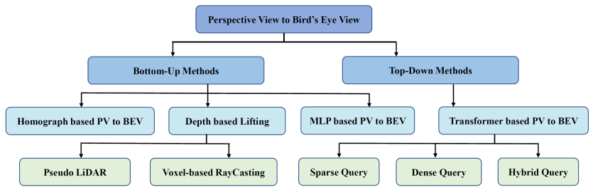
Vision-Centric BEV Perception: A Survey
Yuexin Ma, Tai Wang, Xuyang Bai, Huitong Yang, Yuenan Hou, Yaming Wang, Yu Qiao, Ruigang Yang, Xinge Zhu.
TPAMI 2024
[Paper] [Home Page]
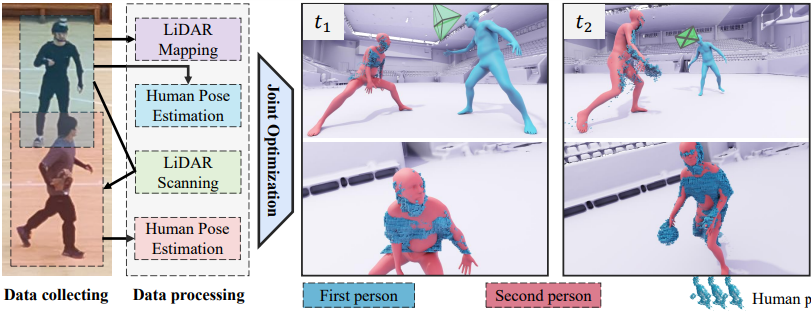
HiSC4D: Human-Centered Interaction and 4D Scene Capture in Large-Scale Space Using Wearable IMUs and LiDAR
Yudi Dai, Zhiyong Wang, Xiping Lin, Chenglu Wen, Lan Xu, Siqi Shen, Yuexin Ma, Cheng Wang.
TPAMI 2024
[Paper] [Home Page]
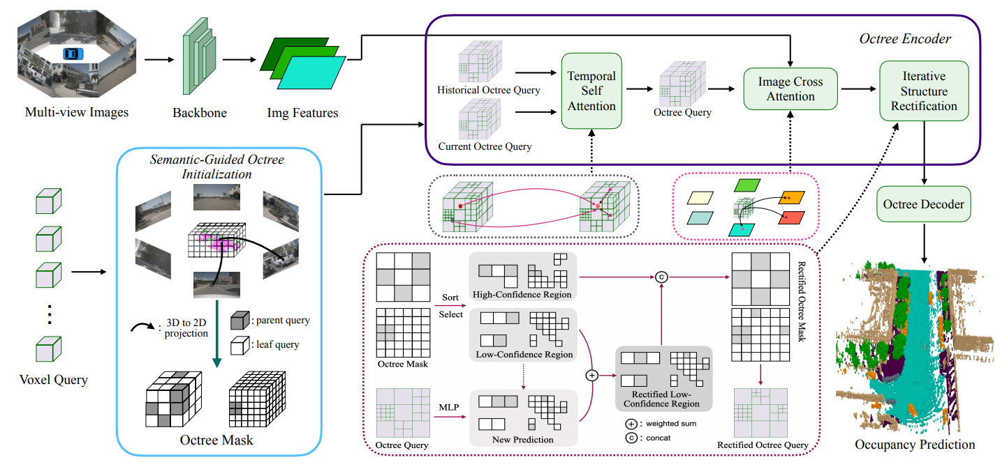
OctreeOcc: Efficient and Multi-Granularity Occupancy Prediction Using Octree Queries
Yuhang Lu, Xinge Zhu, Tai Wang*, Yuexin Ma*.
NeurIPS 2024
[Paper] [Home Page]
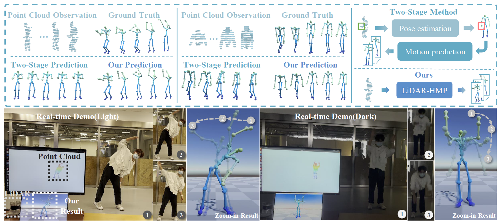
Towards Practical Human Motion Prediction with LiDAR Point Clouds
Xiao Han, Yiming Ren, Yichen Yao, Yujing Sun, Yuexin Ma*.
MM 2024 Oral
[Home Page]
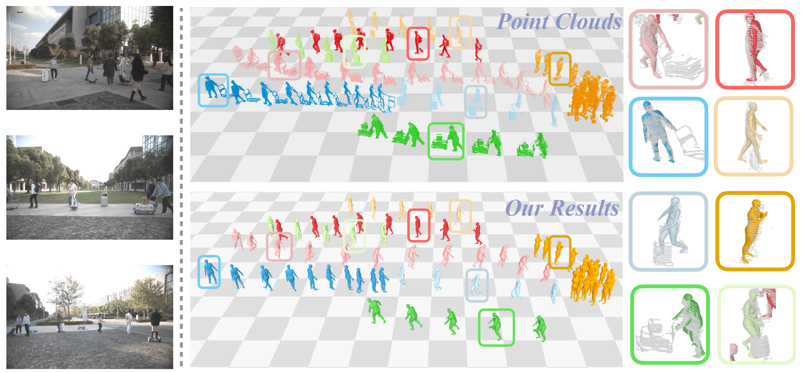
LiveHPS++: Robust and Coherent Motion Capture in Dynamic Free Environment
Yiming Ren, Xiao Han, Yichen Yao, Xiaoxiao Long, Yujing Sun*, Yuexin Ma*.
ECCV 2024 Oral
[Paper] [Home Page]
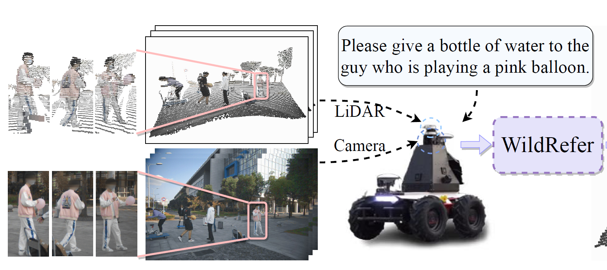
WildRefer: 3D Object Localization in Large-scale Dynamic Scenes with Multi-modal Visual Data and Natural Language
Zhenxiang Lin, Xidong Peng, Peishan Cong, Ge Zheng, Yujing Sun, Yuenan Hou, Xinge Zhu, Sibei Yang, Yuexin Ma*.
ECCV 2024
[Paper] [Home Page]
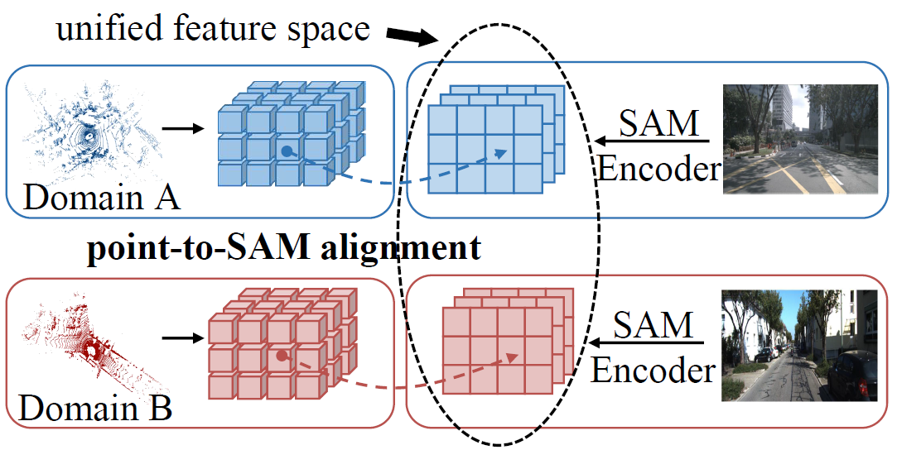
Learning to Adapt SAM for Segmenting Cross-domain Point Clouds
Xidong Peng, Runnan Chen, Feng Qiao, Lingdong Kong, Youquan Liu, Yujing Sun, Tai Wang, Xinge Zhu*, Yuexin Ma*.
ECCV 2024
[Home Page]
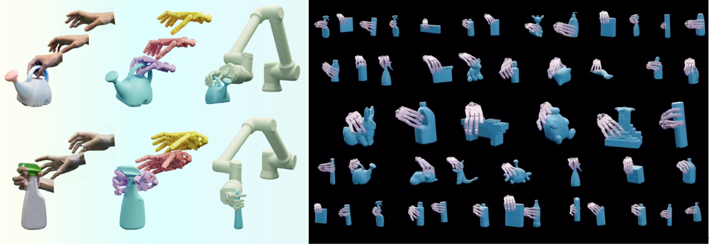
RealDex: Towards Human-like Grasping for Robotic Dexterous Hand
Yumeng Liu, Yaxun Yang, Youzhuo Wang, Xiaofei Wu, Jiamin Wang, Yichen Yao, Soren Schwertfeger, Sibei Yang, Wenping Wang, Jingyi Yu, Xuming He, Yuexin Ma*.
IJCAI 2024
[Home Page]
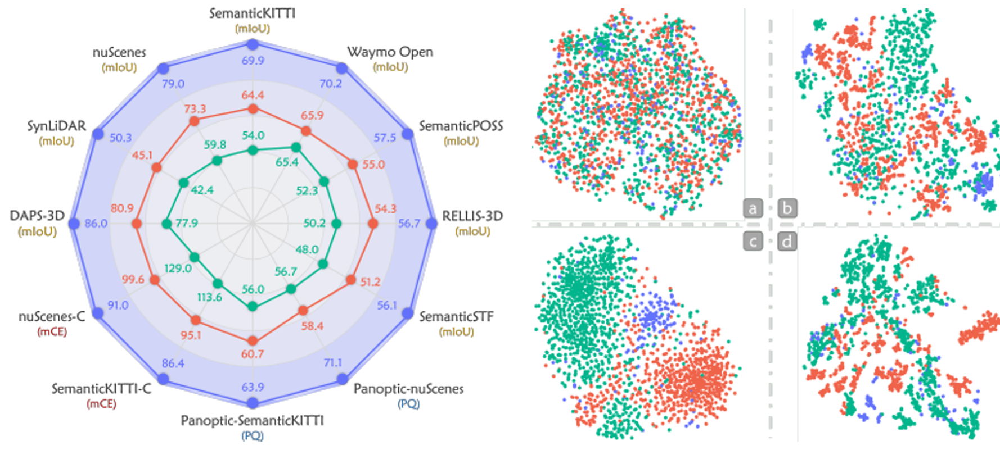
Multi-Space Alignments Towards Universal LiDAR Segmentation
Youquan Liu, Lingdong Kong, Xiaoyang Wu, Runnan Chen, Xin Li, Liang Pan, Ziwei Liu, Yuexin Ma*.
CVPR 2024
[Home Page]
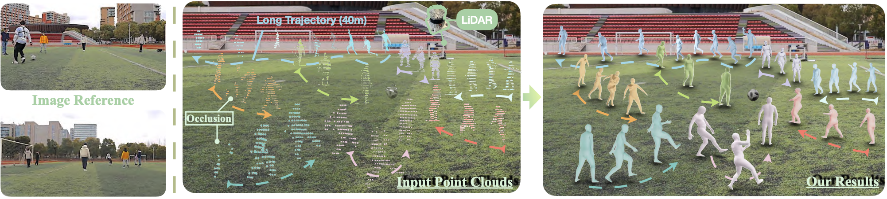
LiveHPS: LiDAR-based Scene-level Human Pose and Shape Estimation in Free Environment
Yiming Ren, Xiao Han, Chengfeng Zhao, Jingya Wang, Lan Xu, Jingyi Yu, Yuexin Ma
CVPR 2024 Highlight
[Home Page] [Paper]
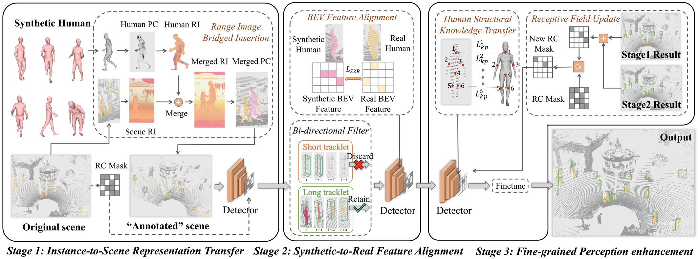
HUNTER: Unsupervised Human-centric 3D Detection via Transferring Knowledge from Synthetic Instances to Real Scenes
Yichen Yao, Zimo Jiang, YUJING SUN, Zhencai Zhu, Xinge ZHU, Runnan Chen, Yuexin Ma
CVPR 2024
[Home Page] [Paper]
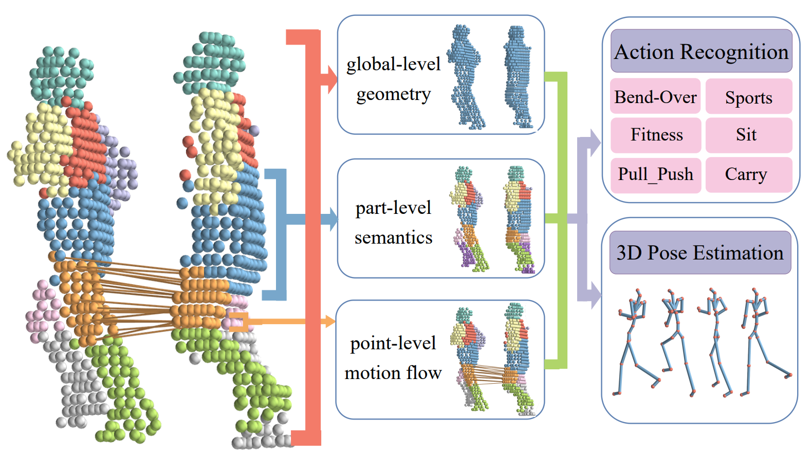
A Unified Framework for Human-centric Point Cloud Video Understanding
Yiteng Xu, Kecheng Ye, Xiao Han, Yiming Ren, Xinge ZHU, Yuexin Ma
CVPR 2024
[Home Page] [Paper]
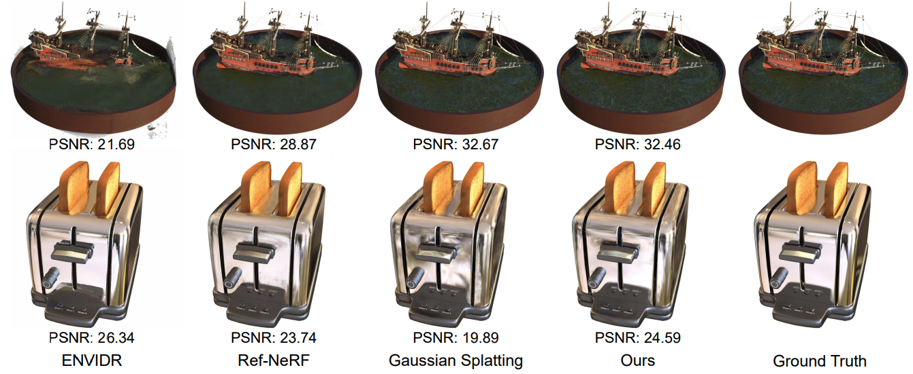
GaussianShader: 3D Gaussian Splatting with Shading Functions for Reflective Surfaces
YingWenQi Jiang, Jiadong Tu, Yuan Liu, Xifeng Gao, Xiaoxiao Long, Wenping Wang, Yuexin Ma
CVPR 2024
[Home Page] [Paper]
2023
8 papers
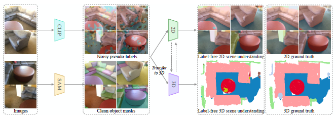
Towards Label-free Scene Understanding by Vision Foundation Models
Runnan Chen, Youquan Liu, Lingdong Kong, Nenglun Chen, Xinge Zhu, Yuexin Ma*, Tongliang Liu, Wenping Wang*.
NeurIPS 2023
[Paper] [Home Page]
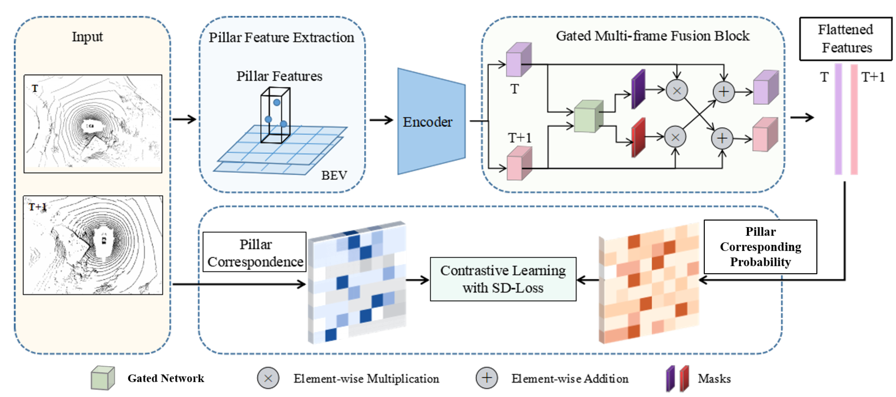
ContrastMotion: Self-supervised Scene Motion Learning for Large-Scale LiDAR Point Clouds
Xiangze Jia, Hui Zhou, Xinge Zhu, Yandong Guo, Ji Zhang, Yuexin Ma*.
IJCAI 2023
[Paper] [Home Page]
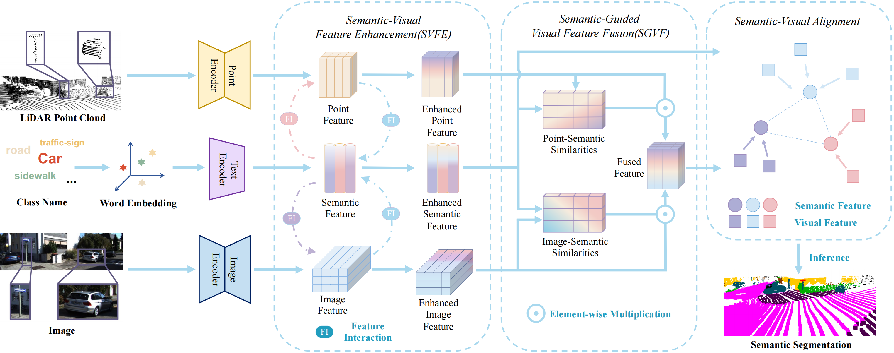
See More and Know More: Zero-shot Point Cloud Segmentation via Multi-modal Visual Data
Yuhang Lu, Qi Jiang, Runnan Chen, Yuenan Hou, Xinge Zhu, Yuexin Ma
ICCV 2023
[Home Page] [Paper]
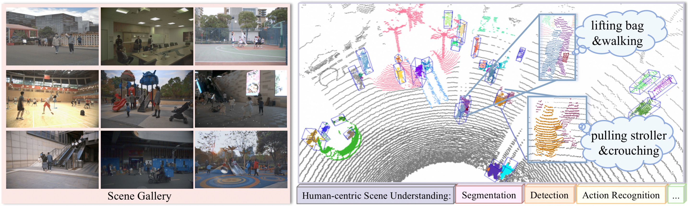
Human-centric Scene Understanding in 3D Large-scale Scenarios
Yiteng Xu, Peishan Cong, Yichen Yao, Runnan Chen, Yuenan Hou, Xinge Zhu, Xuming He, Jingyi Yu, Yuexin Ma
ICCV 2023
[Home Page] [Paper]
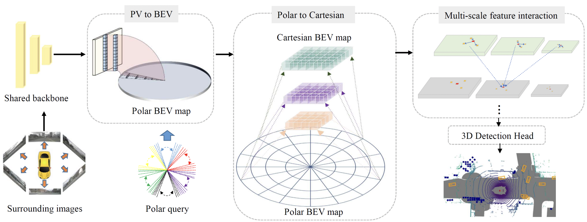
One Training for Multiple Deployments: Polar-based Adaptive BEV Perception for Autonomous Driving
Huitong Yang, Xuyang Bai, Xinge Zhu, Yuexin Ma
ICRA 2023
[Home Page] [Paper]
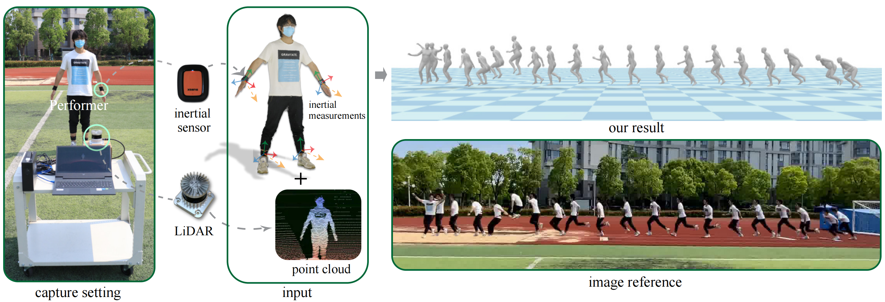
LiDAR-aid Inertial Poser: Large-scale Human Motion Capture by Sparse Inertial and LiDAR Sensors
Yiming Ren, Chengfeng Zhao, Yannan He, Peishan Cong, Han Liang, Jingyi Yu, Lan Xu, Yuexin Ma
TVCG 2023
[Home Page] [Paper]
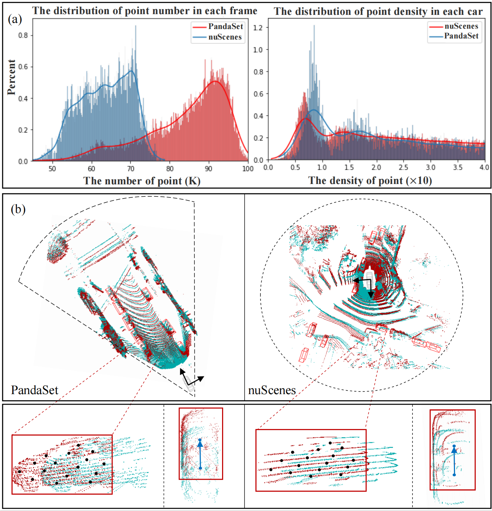
CL3D: Unsupervised Domain Adaptation for Cross-LiDAR 3D Detection
Xidong Peng, Xinge Zhu, Yuexin Ma
AAAI 2023
[Home Page] [Paper]
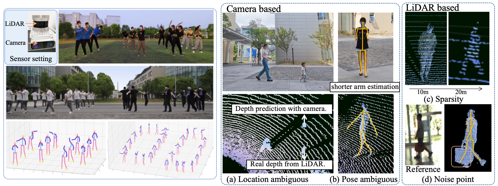
Weakly Supervised 3D Multi-person Pose Estimation for Large-scale Scenes based on Monocular Camera and Single LiDAR
Peishan Cong, Yiteng Xu, Yiming Ren, Juze Zhang, Lan Xu, Jingya Wang, Jingyi Yu, Yuexin Ma
AAAI 2023 Oral
[Home Page] [Paper]
2022
3 papers
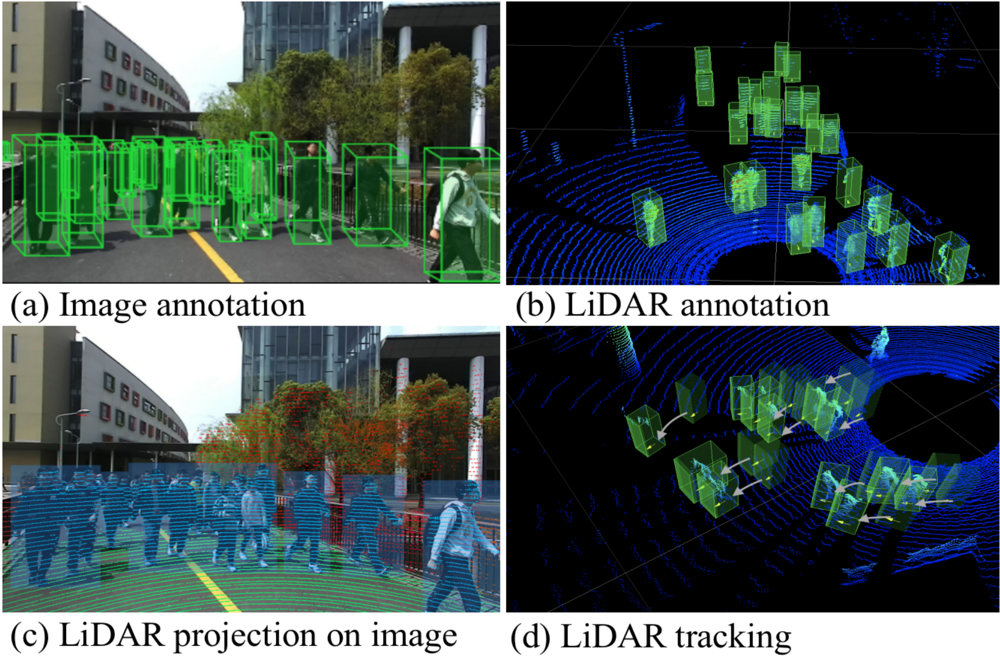
STCrowd: A Multimodal Dataset for Pedestrian Perception in Crowded Scenes
Peishan Cong, Xinge Zhu, Feng Qiao, Yiming Ren, Xidong Peng, Yuenan Hou, Lan Xu, Ruigang Yang, Dinesh Manocha, Yuexin Ma
CVPR 2022
[Home Page] [Paper]
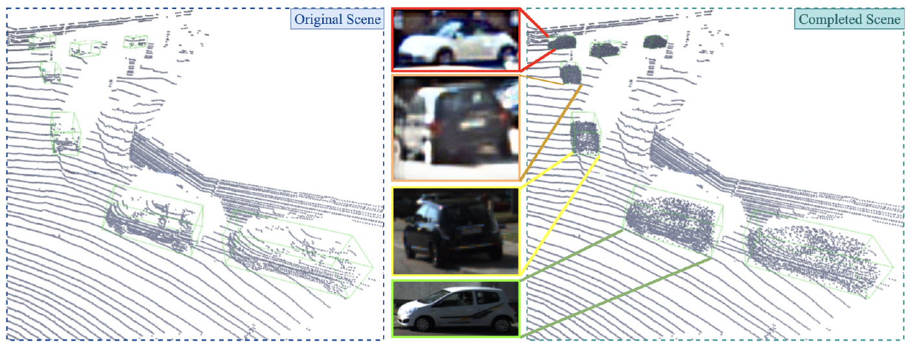
Self-supervised Point Cloud Completion on Real Traffic Scenes via Scene-concerned Bottom-up Mechanism
Yiming Ren, Peishan Cong, Xinge Zhu, Yuexin Ma
ICME 2022
[Home Page] [Paper]
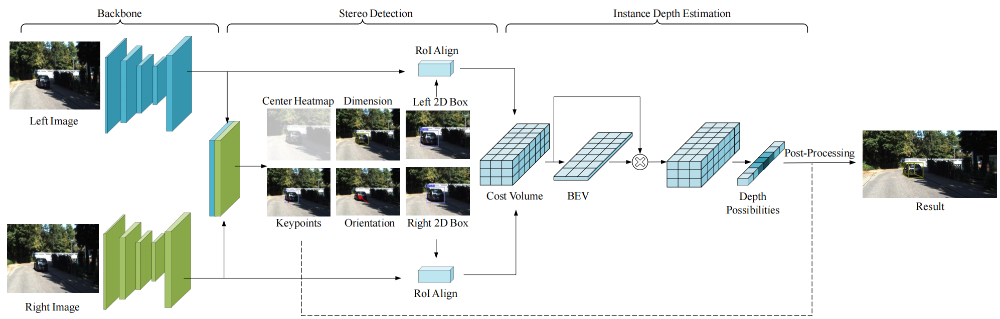
SIDE: Center-based Stereo 3D Detector with Structure-awareInstance Depth Estimation
Xidong Peng, Xinge Zhu, Tai Wang, Yuexin Ma
WACV 2022
[Home Page] [Paper]
2021
1 paper
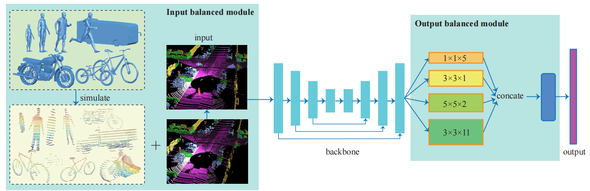
Input-Output Balanced Framework for Long-tailed LiDAR Semantic Segmentation
Peishan Cong, Xinge Zhu, Yuexin Ma
ICME 2021
[Home Page] [Paper]
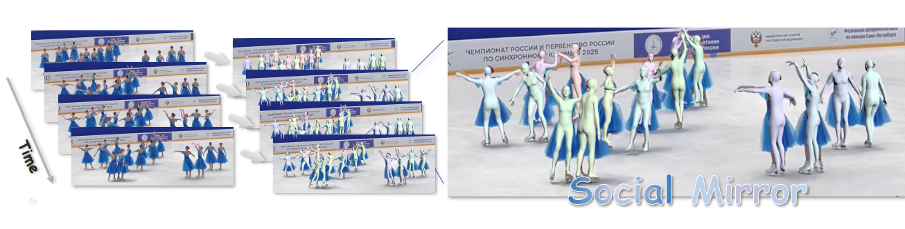
SocialMirror: Reconstructing 3D Human Interaction Behaviors from Monocular Videos with Semantic and Geometric Guidance
CVPR 2026Qi Xia, Peishan Cong, Ziyi Wang, Yujing Sun, Qin Sun, Xinge Zhu, Mao Ye, Ruigang Yang, Yuexin Ma.
[Paper]